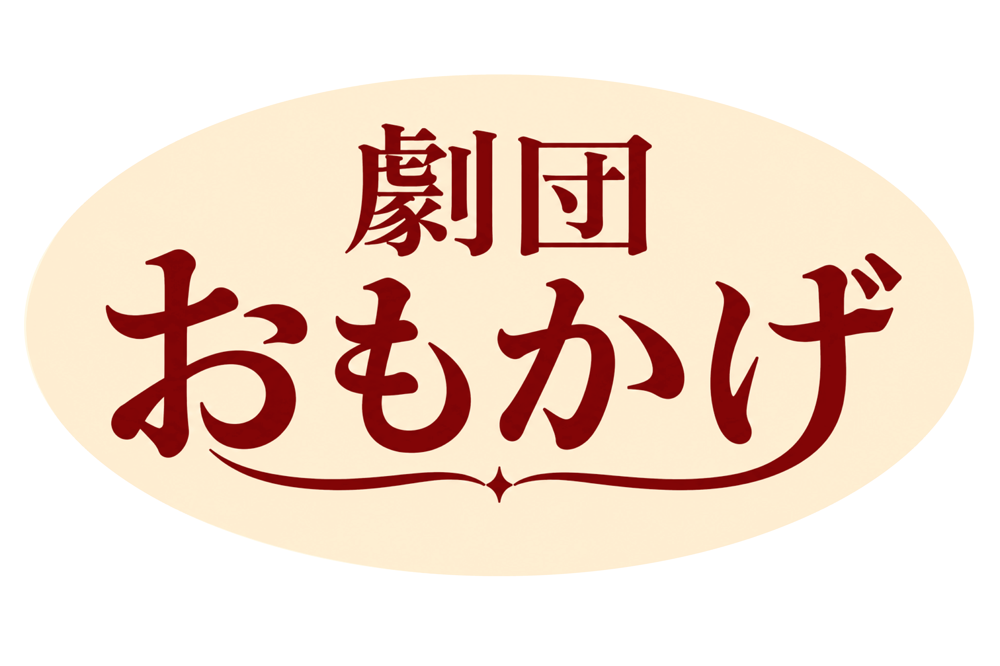

劇団おもかげについて
劇団おもかげは、2016年頃に結成された小劇団です。
「人の人生を、舞台の上で丁寧に再現すること」を理念とし、 日常に埋もれた感情や記憶をテーマにした作品を中心に上演しています。
派手な演出ではなく、 会話劇・生活劇を主体としたリアリティある舞台作りを特徴としており、 観客からは「本当に誰かの人生を覗いているようだ」と評されることもあります。
現在は自劇場「小劇場おもかげ」を拠点に、 定期公演および新人団員募集を行っています。

劇団方針
劇団おもかげでは、 「役を演じる」のではなく、 「役として生きる」ことを重視しています。
稽古期間中は共同生活・生活観察・役作りの共有を通して、 団員それぞれが舞台上だけではない人物理解を深めています。
そのため、 公演によっては長期稽古や生活環境の調整を伴う場合があります。